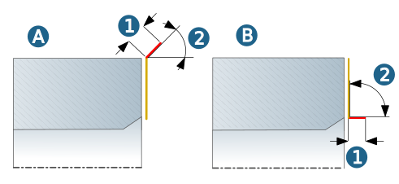

Macros
Additional movements during infeed (approach macro) or retraction (retract macro).
Approach macro / Retract macro
Define the Ramp length (1) and Ramp angle (2) for the Ramp approach macro (A) / Ramp retract macro (B).
|  |
Trim to Stock: Enable to automatically extend the defined turning contour (1) up to the stock section contour (2). Use Trim stock top (3) to extend the turning contour up to the top stock section contour and use Trim stock bottom (4) to extend the stock section contour up to the bottom stock section contour.
 |
Note
The functions Trim to Stock and With chamfer (see Strategy dialog page) can only be used in combination if the stock is horizontally aligned (parallel to the X axis of the frame). If this is not the case, the With chamfer option is disabled and a warning message is output.